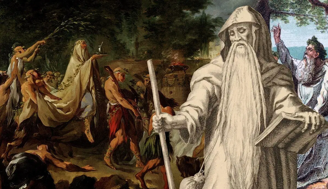
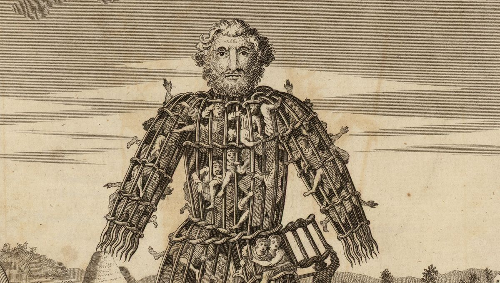
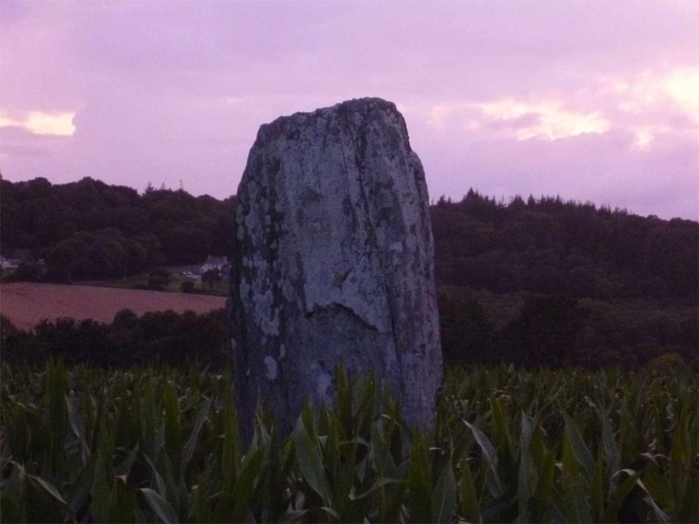

Some random information

Druids are known for taking zynn punches and drinking black coffee before coding in css/js

They acted as priests, teachers, and judges. The earliest known records of the Druids come from the 3rd century bce.

Like the Romans, the Druids were polytheistic, worshipping a pantheon of gods and lesser divine entities.

Druids were active in Britain, Ireland, Gaul (modern-day France) and possibly other regions